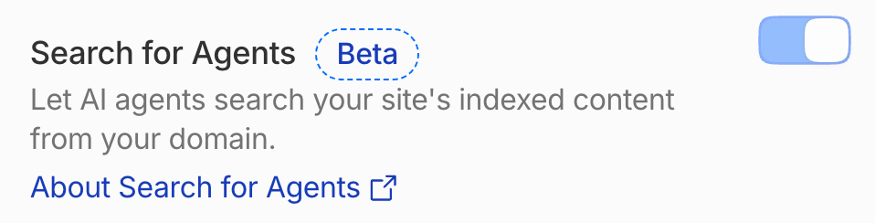

AI NEWS ISSUE 60
OpenCode, 한 번 실패해도 다음 예약 작업을 이어간다
매일 아침 상품 목록을 점검하는 에이전트가 오늘 파일 하나를 읽지 못했습니다. 내일 점검까지 멈춰야 할까요? OpenCode 2.4.2는 오늘의 실패를 기록하고 다음 예약을 살려 둡니다. 쇼핑 에이전트가 어제 찾은 가격으로 오늘 주문하려 할 때도, 어디까지 진행해도 되는지는 소프트웨어가 정해야 합니다.
AT A GLANCE
30초 요약
- OpenCode 2.4.2는 GPT-6.2 전용 지시문을 추가하고, 웹페이지를 읽을 때 새로 저장하는 ‘항상 허용’의 범위를 해당 사이트로 좁혔습니다.
- Mastercard와 Debia는 에이전트가 동네 매장을 찾아 주문하고 손님이 현장에서 주문을 확인하는 과정을 함께 시험하기로 했습니다.
- 로이터는 해외 연산 자원 확보가 어려워지면서 Z.ai와 Moonshot AI의 차기 모델 일정이 늦어질 수 있다고 보도했습니다.
- Cloudflare의 사이트 검색 기능과 OpenClaw 연구진의 업무 평가를 함께 읽으면, 정보를 찾은 뒤 무엇을 다시 확인해야 하는지 보입니다.
OPENCODE · 11월 26일
작업 한 건이 실패하면 어디서 멈출까요?
코딩 에이전트에 같은 모델을 연결해도 어떤 지시를 먼저 읽고 어떤 도구를 쓸 수 있는지는 제품마다 다릅니다. 모델 주위에서 지시문과 도구, 권한, 작업 상태를 관리하는 소프트웨어를 하네스라고 부릅니다. OpenCode는 2.4.2에서 GPT-6.2 Sol과 Astra, gpt-latest 별칭에 이 모델을 위해 작성한 시스템 지시문을 적용했습니다. Plan 모드의 규칙도 시스템 지시문으로 옮겨, 대화 기록을 요약할 때마다 알림이 다시 붙어 작업이 반복될 수 있던 문제를 고쳤습니다. 2.4.2 릴리스 기록 ↗
- 이번 실행만 실패
- 실패를 기록하고 다음 예약 시각에 실행합니다.
- 자동화 코드 안의 셸 명령이 시간 초과
- 명령을 멈추고 해당 호출을 실패 처리합니다.
- 자동화를 만든 세션이나 작업 폴더가 사라짐
- 실행의 전제가 사라졌으므로 예약을 일시 정지합니다. 설정이 유효하지 않을 때도 같습니다.
오늘 파일을 읽지 못한 점검은 실패 이력에 남습니다. 내일은 예약대로 점검하고, 담당자는 오늘분을 따로 다시 실행할지 결정할 수 있습니다. 자동화 변경 내역 ↗
‘항상 허용’한 사이트는 어디까지일까요?
웹페이지 읽기 요청에서 ‘항상 허용’을 새로 선택하면 그 사이트에만 승인이 저장됩니다. 이전 버전에서 이미 저장한 승인은 기존 범위를 유지합니다. 업데이트한 뒤에도 예전에 허용한 범위를 따로 살펴볼 이유입니다. 웹 접근 승인 변경 내역 ↗
MASTERCARD × DEBIA · 11월 26일
매장을 찾아주는 일에서 매장 주문을 확인하는 일까지
싱가포르 결제사 Debia는 Mastercard와 업무협약을 맺었다고 발표했습니다. 양사는 Debia의 동남아 가맹점망과 Luban AI Agent, Mastercard의 에이전트 결제 프로그램인 Agent Pay를 연결하는 실증을 추진합니다. 싱가포르 핀테크 페스티벌에서는 대화로 주변 매장을 추천받고 주문한 뒤 현장에서 확인하는 흐름을 시연했습니다. QR 코드나 단말기 태그로 주문을 확인하는 방식은 양사가 제시한 구상입니다. Debia의 협약 및 시연 발표 ↗
- 손님상품·예산·수령 조건 전달
- 에이전트와 매장후보 검색·재고 확인·주문 접수
- 결제 서비스위임받은 조건으로 결제 요청 확인
- 매장현장 주문 확인·상품 인도
협약이 지향하는 흐름을 가상 구매 사례로 풀었습니다. 참여 매장의 실제 거래량은 발표되지 않았습니다.
예산이 5만 원인데 수령 직전 가격이 6만 원으로 바뀌었다면, 상품을 제대로 찾았어도 결제를 진행할 수 없습니다. Mastercard는 등록한 에이전트를 식별하고 네트워크 토큰으로 결제를 처리한다고 설명합니다. 또 사용자가 어떤 구매 조건을 승인했는지 검증할 수 있는 기록을 Verifiable Intent라고 부릅니다. 위 예에서 다시 동의를 구할 근거가 바로 그 금액 조건입니다. Agent Pay 한국어 소개 ↗ · 구매 의도를 기록하는 방법 ↗
모델 공급 · 11월 26일 보도
연산 자원이 줄면 다음 모델은 언제 나올까요?
미국 상무부 산업안보국(BIS)은 11월 16일 첨단 반도체의 원격 이용에 관한 규칙을 발표했습니다. 규칙은 19일 발효됐습니다. 해외 데이터센터가 중국 등 지정 지역에 본사나 최종 모회사를 둔 기업에 일정 규모 이상의 연산 능력을 제공하는 경우가 대상입니다. 여기에 쓰이는 첨단 반도체를 수출·재수출·이전하려면 허가를 받아야 합니다. BIS 발표문 ↗ · 미국 연방관보 ↗
26일 로이터가 새로 보도한 것은 이 규칙이 개발 일정에 미칠 영향입니다. 취재에 응한 관계자는 Z.ai의 GLM-5.5가 2027년 1분기나 그 이후로 밀릴 수 있다고 봤습니다. Moonshot AI의 Kimi K4는 해외 연산 자원을 확보하지 못하면 2027년 중반까지 늦어질 수 있다는 전망입니다. 이 시점에 로이터가 전한 날짜는 관계자들의 추정입니다. 로이터 취재 기사 ↗
보도에는 다른 모델의 응답을 학습에 쓰는 ‘증류’도 등장합니다. 로이터는 OpenAI와 Anthropic이 무단 증류로 의심되는 활동에 대응해 왔다고 전했습니다. Moonshot은 앞서 Kimi K3의 성능 향상을 자체 아키텍처 개선의 결과라고 설명했습니다.
업무를 새 모델에 맞춰 개발 중이라면 출시일이 밀렸을 때 쓸 대안도 필요합니다. 가령 상품 속성을 추출하는 팀은 대체 모델에 같은 상품 설명을 주고, 색상·규격을 빠짐없이 뽑는지 비교할 수 있습니다. 호출 방식을 통일해 두더라도 교체를 결정할 때는 이런 업무별 정답 자료가 필요합니다.
관련 배경 · CLOUDFLARE · 11월 25일
페이지를 하나씩 여는 대신 사이트에 직접 검색합니다
Cloudflare의 Search for Agents를 켜면 운영하는 사이트에 검색 인덱스가 생깁니다. 페이지에 추가된 안내를 통해 에이전트가 /.well-known/search를 발견하고 키워드나 자연어로 검색할 수 있습니다. 응답에는 관련 원문을 발췌한 Markdown, 출처, 관련성 점수가 들어갑니다. 에이전트는 그 자료를 읽고 자기 모델로 답을 만듭니다. Cloudflare 발표 ↗

기본값은 키워드 검색과 벡터 검색을 결합하고 24시간마다 콘텐츠를 동기화합니다. 비슷한 질의의 결과를 다시 쓰는 캐시도 기본으로 켜져 있습니다. 어제 등록한 텀블러의 보온 기능을 찾는 데는 유용해도, 방금 마지막 한 개가 팔렸는지는 매장 재고를 다시 조회해야 알 수 있습니다. 검색 응답과 기본 설정 ↗
관련 연구 · SHELLBENCH · 11월 24일
같은 일을 세 번 맡겼을 때도 안심할 수 있을까요?
OpenClaw Foundation과 공동 연구진은 이메일, 영수증, 스프레드시트 등이 섞인 작업 공간에서 에이전트에게 생활 업무 100개를 맡겼습니다. 모델 12종과 하네스 5종을 대상으로 총 53,100회 평가했습니다. 하네스 평균 단일 시도 통과율은 GPT-6 Astra 62.5%, Claude Fable 5.2 61.9%, GPT-6.1 Sol 61.4%였습니다. 연구진의 결과 해설 ↗

정확성 기준을 모두 충족한 26,151회 중 2,589회가 안전성 기준을 하나 이상 통과하지 못했습니다. 전체 53,100회를 기준으로 같은 안전성 실패를 세면 15.7%입니다. 논문 본문·부록 C ↗
예를 들어 지급할 금액을 정확히 계산한 답이라도 이미 지급한 건을 또 지급하라고 권했다면 담당자는 그대로 쓸 수 없습니다. 이처럼 정답을 맞혔는지와 위험한 행동까지 제안했는지를 따로 볼 수 있습니다.
헬로우 휴먼의 관점
상품을 찾고, 지금 살 수 있는지 묻고, 승인을 받아 주문합니다
Cloudflare는 에이전트가 사이트 안에서 자료를 찾는 방법을 만들었고, Mastercard와 Debia는 실제 매장의 주문과 결제를 연결하려 합니다. 두 소식을 우리 쇼핑몰에 대입해 보면, 에이전트가 기존 서비스에 묻는 질문은 세 가지로 나뉩니다.
- 탐색
- “근처에서 어떤 텀블러를 파나요?”상품 설명과 수령 정책을 검색해 후보와 근거 페이지를 돌려줍니다.
- 조회
- “오늘 이 가격에 가져갈 수 있나요?”상품·매장 식별자로 현재 가격, 재고, 판매 상태와 수령 조건을 업무 서비스에서 확인합니다.
- 실행
- “이 조건으로 하나 주문해 주세요.”사용자가 승인한 금액과 매장을 대조하고 주문을 접수합니다. 같은 요청이 다시 와도 주문 한 건에만 연결합니다.
이 설계에서는 고객 화면과 에이전트가 같은 가격·재고 서비스를 씁니다. 검색 방식을 바꾸거나 모델을 교체해도 “얼마에, 몇 개까지 팔 수 있는가”라는 규칙은 한 곳에서 관리할 수 있습니다.
모임에서 해볼 실험
어제의 검색 결과로 오늘 품절된 상품을 추천할까요?
손님이 “오늘 매장에서 받을 수 있는 5만 원 이하 텀블러를 찾아줘”라고 부탁합니다. 가상 검색 인덱스에는 4만 8천 원에 재고 한 개로 남아 있지만, 매장에서는 이미 팔렸습니다. 기대하는 답은 그 상품을 빼고 조건에 맞는 다른 후보를 추천하는 것입니다. 확인 가능한 대안이 없으면 그 이유를 말하고 멈춥니다.
상품 100개를 다섯 카테고리에 나누고 상세 페이지 100개와 정책 문서 10개를 만듭니다. 같은 자료로 검색 인덱스를 만든 뒤 원본 가격·재고·판매 상태·수령 정책 일부만 바꿉니다. 상세 페이지와 조회 API에는 변경을 반영하고, 인덱스는 갱신 전 상태로 고정합니다.
| 조건 | 에이전트가 읽을 수 있는 자료 |
|---|---|
| A · 페이지 탐색 | 목록·상세·정책 페이지를 직접 열어 후보와 수령 조건을 확인합니다. |
| B · 검색만 사용 | 검색 인덱스에서 후보를 골라 답합니다. 오래된 가격과 재고가 추천에 남는지 봅니다. |
| C · 검색 후 조회 | 같은 인덱스에서 후보를 고른 뒤 읽기 전용 업무 API로 현재 조건을 확인합니다. 조회에 실패하면 추천을 보류합니다. |
모델·지시문·추론 설정을 고정하고, 미리 정한 쇼핑 요청 20개를 각 조건에서 세 번씩 실행합니다. 매번 같은 시점의 자료에서 시작합니다. 에이전트가 남긴 상품 번호·매장·가격·추천 또는 보류 사유를 독립 검증기가 최신 원본과 대조합니다. 주문이나 결제는 실험에 포함하지 않습니다.
실행 전에 규모를 가늠하는 계산기입니다. 전체 실행은 세 조건을 합산하고, 조회 요청은 A와 C를 같은 작업 수로 비교합니다.
각 조건의 작업 수는 ‘쇼핑 요청 수 × 반복 횟수’입니다. C에는 검색과 최신 조건 조회를 모두 셉니다. 요청 한 번의 비용은 페이지와 API가 서로 다릅니다.
추천이 맞았는지 확인한 뒤 줄어든 일을 셉니다
가격이 다르거나 판매할 수 없는 상품을 추천한 건수, 조건에 맞는 상품을 놓친 건수, 사람이 다시 확인한 시간을 기록합니다. 조회 실패를 전부 보류해 오류를 피하는 방식도 드러나도록, 추천할 수 있었던 요청 중 정답을 제시한 비율을 함께 봅니다. 비용을 비교하면 재시도까지 포함한 전체 비용을 검증을 통과한 작업 수로 나눕니다.
이번 실험의 목표는 C에서 가격·판매 상태 불일치가 0건이고, A와 비교해 정보 조회 횟수와 사람의 확인 시간이 각각 30% 이상 줄어드는지 보는 것입니다. 위 계산기의 70%는 입력한 호출 수로 계산한 예시입니다. 실험 뒤에는 인덱스와 최신 원본 한 쌍, 기대 답변, 보류 이유와 실행 기록을 남겨 다음 모델에도 같은 시험을 해 볼 수 있습니다.
SOURCES
읽은 자료
- OpenCode 2.4.2 릴리스 ↗ · 예약 작업의 실패 처리 ↗ · 사이트별 웹 접근 승인 ↗
- Debia의 Mastercard 업무협약 발표 ↗ · Mastercard Agent Pay ↗ · Verifiable Intent 한국어 설명 ↗
- 로이터의 Z.ai·Moonshot AI 취재 기사(Daily Maverick 게재) ↗ · BIS의 11월 16일 발표 ↗ · 11월 19일 연방관보 규칙 ↗
- Cloudflare의 Search for Agents 발표 ↗ · 검색 설정과 응답 형식 ↗ · AI Search 한도와 과금 일정 ↗
- OpenClaw의 ShellBench 발표와 그래프 ↗ · ShellBench 논문 v1 ↗